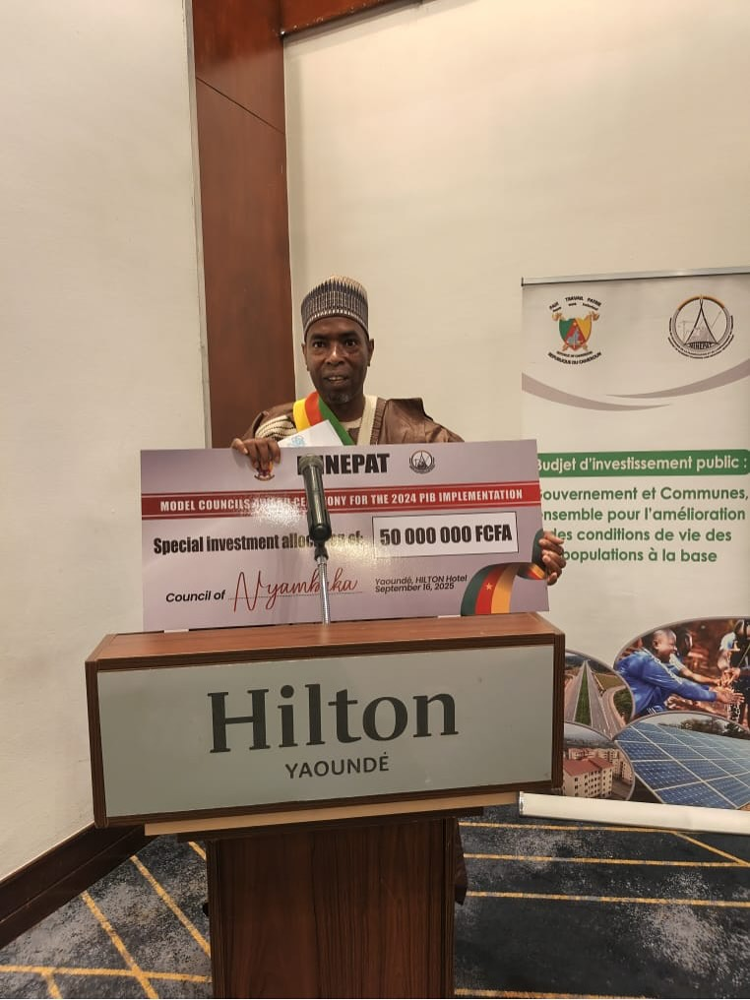
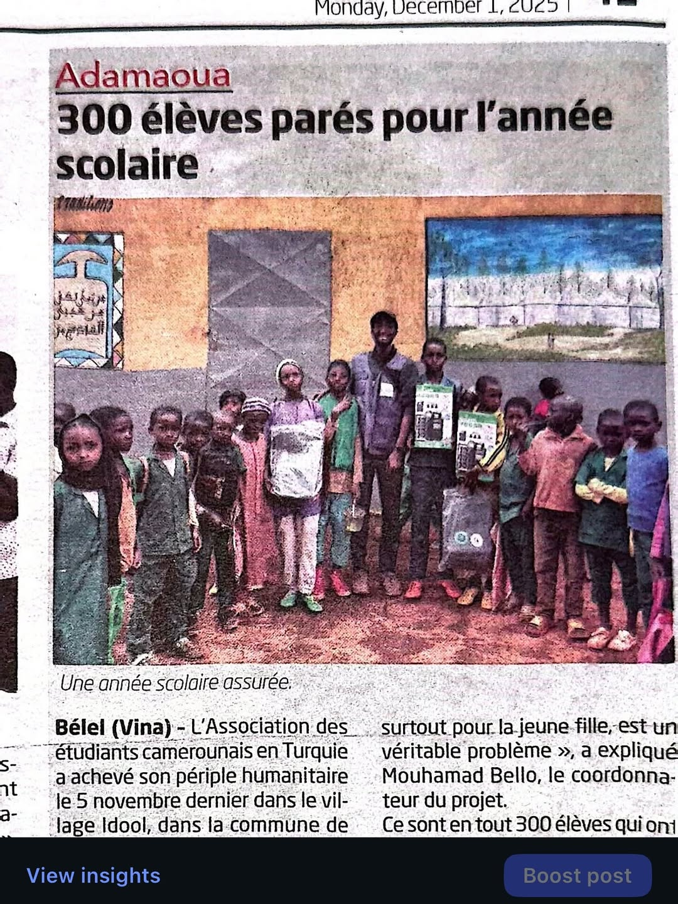
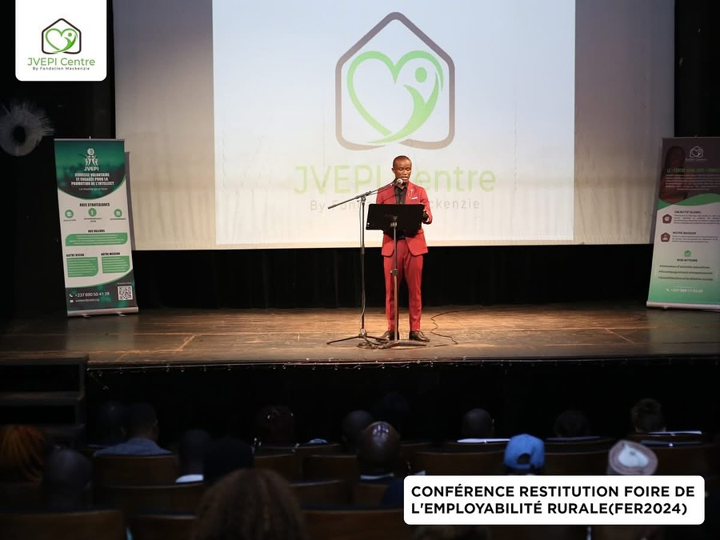

La Fierté de Nyambaka
Prix, distinctions et couvertures médiatiques qui témoignent de notre engagement envers la qualité et la communauté.
Nos Distinctions
Des récompenses qui reflètent notre exigence de qualité et notre engagement communautaire.

En 2025, à l’Hôtel Hilton de Yaoundé, la Commune de Nyambaka a été distinguée parmi les Communes modèles du Cameroun. Cette reconnaissance célèbre les efforts du Maire Abbo Oumarou, de son équipe et de toute la communauté engagée pour le développement local.

La CRTV a présenté notre initiative Back to School ayant permis la distribution de kits scolaires et de lampes solaires à 300 élèves de Garoua-Boulaï, Nyambaka et Idool. Un projet porté par CAMTURK et son équipe engagée pour l’éducation et le développement local.

AEERNY a participé à la restitution de la FER à l’IFC Yaoundé, aux côtés du MINJEC, MINEFOP, MINAC et plusieurs acteurs engagés pour l’insertion professionnelle des jeunes. Cette rencontre a permis de renforcer nos réseaux et d’explorer de nouvelles opportunités pour la jeunesse de Nyambaka.
Des Résultats Concrets
Des chiffres qui parlent d'eux-mêmes — et derrière chaque chiffre, des personnes.
Ce Qu'on Dit de Nous
Des médias camerounais qui ont relayé notre histoire et notre vision.
« AEERNY est l'exemple parfait d'une initiative locale qui parvient à transformer les ressources naturelles de Nyambaka en opportunités économiques durables pour toute la région. »
« La marque AEERNY impressionne par sa cohérence : un produit sain, une démarche communautaire et une croissance réelle. Un modèle à suivre pour la jeunesse entrepreneuriale camerounaise. »
« Rencontre avec les fondateurs d'AEERNY : comment une association étudiante a réussi à créer une marque de jus naturel qui rayonne bien au-delà de Nyambaka. »
« Un reportage sur AEERNY, cette jeune marque qui prouve que l'agroalimentaire camerounais peut être à la fois authentique, sain et porteur de développement local. »
« AEERNY figure parmi les 10 start-ups camerounaises les plus prometteuses du secteur agri-food en 2025, selon notre panel d'experts. »
« L'histoire d'AEERNY, c'est celle de jeunes qui ont choisi de valoriser leur terroir plutôt que de le quitter. Une bouffée d'espoir pour l'agriculture locale. »
Vous Voulez Faire Partie de l'Aventure ?
Commandeze, distribuez, ou simplement partagez notre histoire. Chaque geste compte.
Nous Contacter sur WhatsApp